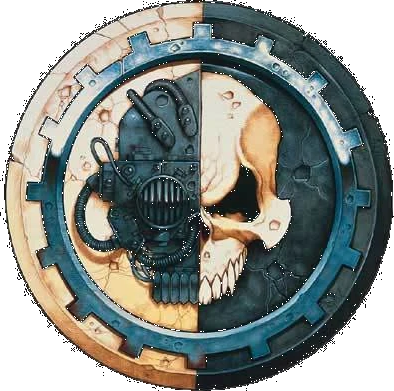

NOOSPHERE // DS-41A




Warning: This archive may contain restricted doctrinal and operational material. Proceed only under authorized review protocols.
If preview fails, the document will open in a new tab automatically.